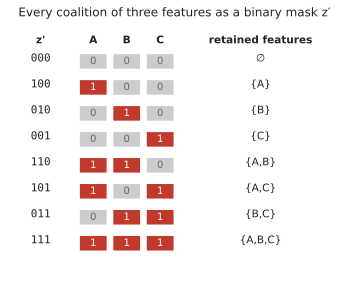
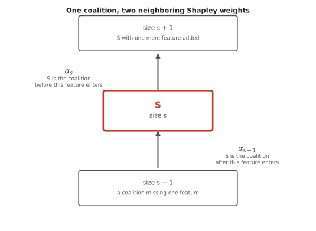
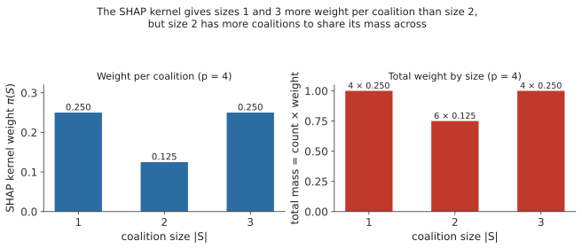
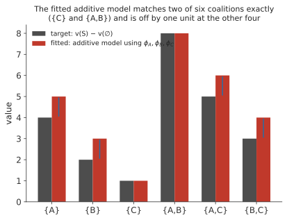
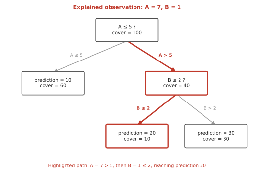
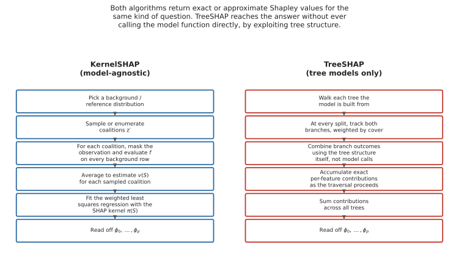

3 How SHAP and KernelSHAP work
3.1 What are we trying to explain?
Suppose a fitted model uses three features,
\[A,\quad B,\quad C.\]
For one observation, the full model output is
\[v(A,B,C) = 19.\]
Suppose the background model value, the model’s average output over a reference sample, is
\[v(\varnothing) = 10.\]
There are therefore
\[19 - 10 = 9\]
units of prediction to attribute to the three features. This is not a decomposition of the observed outcome that generated the training data, and it is not a statement about noise or residuals. It is a decomposition of the fitted model’s output for one specific observation, relative to that model’s own average output over a reference sample.
3.2 Coalitions and the value function
To talk about “some of the features” precisely, we need a name for a subset of features, and a name for the value the model produces from that subset.
Let
\[F = \{A, B, C\}\]
be the complete set of features. A coalition is any subset of \(F\). For three features, the possible coalitions are
\[\varnothing,\ \{A\},\ \{B\},\ \{C\},\ \{A,B\},\ \{A,C\},\ \{B,C\},\ \{A,B,C\}.\]
A coalition tells us which of the observation’s feature values are treated as known for one particular calculation. \(\{A\}\) means “treat \(A\)’s value as known, and treat \(B\) and \(C\) as unavailable.” \(\{A,B,C\}\) means every feature is known, which is the ordinary situation of asking the model for a prediction.
We write \(S\) for one coalition, so \(S \subseteq F\). Two more pieces of notation are used constantly from here on, and it is worth keeping them separate in your head, because they answer different questions.
\(S\) is a set. It tells you which features are in the coalition. For example, \(S = \{B, C\}\).
\(|S|\) is a number: how many features are in that set. For \(S = \{B,C\}\), \(|S| = 2\).
We also write \(p\) for the total number of features under consideration, regardless of which coalition we are looking at. Here \(F = \{A,B,C\}\), so \(p = 3\). A coalition can contain anywhere from none of these features up to all of them: with \(p=3\), \(S=\{B\}\) has \(|S|=1\), and \(S=\{B,C\}\) has \(|S|=2\). Later in this chapter we will use a five-feature example where, say, \(S = \{A, D\}\) has \(|S| = 2\). There is no conflict between \(p=5\) and \(|S|=2\), because \(p\) counts every feature under consideration and \(|S|\) counts only the features inside this one coalition.
For a coalition \(S\), define
\[v(S)\]
as the value assigned to that coalition. For now, treat these as given numbers, exactly as you would read them off a table:
\[v(\varnothing)=10,\quad v(A)=14,\quad v(B)=12,\quad v(C)=11,\]
\[v(A,B)=18,\quad v(A,C)=15,\quad v(B,C)=13,\quad v(A,B,C)=19.\]
These eight numbers are used consistently for the rest of the derivation. Later in the chapter we will define precisely how a fitted machine learning model produces a number like \(v(\{A\})=14\) in the first place, through masking and averaging. Until then, \(v(S)\) is simply a function that returns one number for each of the \(2^{p}\) possible coalitions, and the derivation of the Shapley value only needs that table, not yet the mechanism that produced it.
3.3 Contribution in different coalitions
A natural first idea is to ask what a feature is worth when it joins last, after every other feature is already in place, and stop there. Consider feature \(A\), and ask what it adds in four different contexts: joining last, after each of the other features individually, and joining first, into an empty coalition.
Added last, joining \(\{B,C\}\) to make \(\{A,B,C\}\):
\[v(A,B,C) - v(B,C) = 19 - 13 = 6.\]
Added after only \(B\), joining \(\{B\}\) to make \(\{A,B\}\):
\[v(A,B) - v(B) = 18 - 12 = 6.\]
Added after only \(C\), joining \(\{C\}\) to make \(\{A,C\}\):
\[v(A,C) - v(C) = 15 - 11 = 4.\]
Added first, joining \(\varnothing\) to make \(\{A\}\):
\[v(A) - v(\varnothing) = 14 - 10 = 4.\]
Four contexts, four different numbers for the same feature: 6, 6, 4, 4. This is the same pattern Figure 1.3 showed in the previous chapter. \(A\) does not have one context-independent contribution, so no single one of these four differences can be called “the” contribution of \(A\). The rest of this chapter is about combining all four correctly, rather than picking one of them.
3.4 Averaging over all feature orders
With three features, there are
\[3! = 6\]
possible orders in which \(A\), \(B\), and \(C\) could be added, one at a time, starting from \(\varnothing\) and finishing at \(\{A,B,C\}\). For example, the order \(A,B,C\) means
\[\varnothing \to \{A\} \to \{A,B\} \to \{A,B,C\}.\]
For each order, we can ask how much \(A\) adds at the point where it enters.
| Order | A’s contribution when it enters |
|---|---|
| A, B, C | \(v(A)-v(\varnothing) = 4\) |
| A, C, B | \(v(A)-v(\varnothing) = 4\) |
| B, A, C | \(v(A,B)-v(B) = 6\) |
| C, A, B | \(v(A,C)-v(C) = 4\) |
| B, C, A | \(v(A,B,C)-v(B,C) = 6\) |
| C, B, A | \(v(A,B,C)-v(B,C) = 6\) |
Averaging the six values, \((4+4+6+4+6+6)/6 = 5\), gives
\[\phi_A = 5.\]
The same bookkeeping for \(B\) and \(C\), done more compactly, gives
\[\phi_B = 3,\qquad \phi_C = 1.\]
As a check,
\[10 + 5 + 3 + 1 = 19,\]
the full prediction. \(\phi_A, \phi_B, \phi_C\) are the Shapley values of \(A\), \(B\), and \(C\) for this observation, and computing every feature’s Shapley value this way is what SHAP does.
The same six pairwise differences can be read backward, as the amount lost when a feature is removed from the full coalition instead of added to an empty one. The number is identical either way. Only the direction of reading changes. The rest of the derivation sticks to the adding direction, because it connects directly to the next section.
3.5 Marginal contribution
Section by section, the calculations above all had the same shape: some coalition \(S\) is already in place, and we ask what feature \(j\) adds when it joins. Take one specific case: \(S = \{B\}\) and \(j = A\). Before \(A\) enters, the coalition is \(\{B\}\). After \(A\) enters, it is \(\{A,B\}\). So \(A\)’s contribution in this context is
\[v(\{A,B\}) - v(\{B\}) = 18 - 12 = 6.\]
In general, for a feature \(j\) and a coalition \(S\), the marginal contribution of \(j\) to \(S\) is
\[v(S \cup \{j\}) - v(S).\]
\(S \cup \{j\}\) is read “\(S\) union \(j\)”: the coalition \(S\) with \(j\) added. Here, \(j\) is the feature whose contribution we are measuring, and \(S\) is the set of features already present before \(j\) enters. \(S\) must not contain \(j\), since \(j\) is precisely the feature being added to it. This condition, \(S \subseteq F \setminus \{j\}\), reappears in every formula from here on.
3.6 From feature orders to Shapley weights
The average computed above, over six orders, can be reorganized as a sum over coalitions instead of a sum over orders. Rather than listing all six orders, we can ask, for each possible coalition \(S\): in how many of the six orders does \(S\) contain exactly the features that arrive before \(A\)?
| \(S\) before \(A\) | Orders | Count | Weight |
|---|---|---|---|
| \(\varnothing\) | ABC, ACB | 2 | \(2/6 = 1/3\) |
| \(\{B\}\) | BAC | 1 | \(1/6\) |
| \(\{C\}\) | CAB | 1 | \(1/6\) |
| \(\{B,C\}\) | BCA, CBA | 2 | \(2/6 = 1/3\) |
Each row’s weight is the fraction of all six orders in which exactly that coalition sits before \(A\). Multiplying each weight by \(A\)’s contribution in that context, and summing, reproduces the same average as before:
\[\phi_A = \tfrac13(4) + \tfrac16(6) + \tfrac16(4) + \tfrac13(6) = 5.\]
The coalition \(\varnothing\) occurs before \(A\) in two of the six orders, so its contribution, 4, is effectively counted twice out of six. The coalition \(\{B\}\) occurs before \(A\) in only one order, so its contribution, 6, is counted once out of six. Weighting by how often each context occurs, and summing, is exactly the same arithmetic as averaging over the six orders directly.
3.6.1 A formula for the weight, with any number of features
The four weights above, \(1/3, 1/6, 1/6, 1/3\), were read off a table built by listing all six orders. With more features, listing every order becomes impractical, so we derive the weight directly, instead of by enumeration.
First, fix the symbols the derivation uses. \(p\) is the total number of features under consideration. \(j\) is the feature whose Shapley value we are calculating, the one whose contribution we are tracking. \(S\) is one particular set of features that appear before \(j\) in some feature order, so \(S\) does not contain \(j\). \(s = |S|\) is the number of features in that set. Since \(S\) contains none of \(j\) itself and can range from containing none of the other features up to all of them, \(s\) can be any value from \(0\) up to \(p-1\).
We want to count how many of the \(p!\) possible feature orders have exactly the features of \(S\) arriving before \(j\), with every other feature arriving after \(j\). This count has two separate parts, because a complete order is built from two independent choices: how the features before \(j\) are arranged among themselves, and how the features after \(j\) are arranged among themselves.
Before \(j\). The \(s\) features of \(S\) can be arranged among themselves, in front of \(j\), in \(s!\) ways. This is an ordinary count of arrangements: \(s\) items can be lined up in \(s!\) different orders.
After \(j\). Once \(S\) and \(j\) have used up \(s + 1\) of the \(p\) features, \(p - s - 1\) features remain. The \(-1\) accounts for \(j\) itself: start from \(p\) features in total, remove the \(s\) features already placed in \(S\), and remove \(j\), which leaves \(p - s - 1\). These remaining features did not enter into \(j\)’s marginal contribution at all, since that contribution only depends on which features were already present when \(j\) joined. But they still have to go somewhere in a complete feature order, and different arrangements of them count as different orders. So they contribute a factor to the count, even though they do not change the value being counted: they can be arranged, after \(j\), in \((p-s-1)!\) ways.
Multiplying the two independent counts, the number of complete feature orders with exactly \(S\) before \(j\) is \(s! \, (p-s-1)!\). Out of \(p!\) orders in total, the fraction is
\[\frac{s!\,(p-s-1)!}{p!}.\]
A concrete example makes both parts of this count visible at once. Suppose \(p=5\), with features \(\{A,B,C,D,E\}\), and take \(j = C\) and \(S = \{A,D\}\), so \(s = |S| = 2\). The two remaining features, neither in \(S\) nor equal to \(j\), are \(B\) and \(E\), and \(p - s - 1 = 5 - 2 - 1 = 2\) matches that count directly. The complete orders with \(A\) and \(D\) before \(C\), and \(B\) and \(E\) after \(C\), are exactly these four:
\[A,D,C,B,E \qquad A,D,C,E,B \qquad D,A,C,B,E \qquad D,A,C,E,B.\]
Every one of them has \(\{A,D\}\) before \(C\), but they differ in which of \(A,D\) comes first, and which of \(B,E\) comes first. Two choices before \(C\), from \(\{A,D\}\), times two choices after \(C\), from \(\{B,E\}\), gives \(2! \times 2! = 4\) orders, matching \(s!\,(p-s-1)!\) directly. \(C\)’s marginal contribution, \(v(\{A,C,D\}) - v(\{A,D\})\), is the same number in all four of these orders, since it only depends on \(S=\{A,D\}\) being in place before \(C\). What changes from one order to the next is only how \(B\) and \(E\) happen to be arranged afterward, which has no bearing on that contribution. They still have to be counted, because the fraction \(s!(p-s-1)!/p!\) is a fraction of complete feature orders, and each distinct arrangement of \(B\) and \(E\) is a distinct complete order, even though all four give \(C\) the same contribution.
This fraction is the share of all feature orders in which exactly the features in \(S\) occur before \(j\). For \(S = \{B\}\) in the three-feature example, \(p=3\) and \(s=1\), giving \(\frac{1! \cdot 1!}{3!} = \frac16\), matching the table above. For \(S = \{B,C\}\), \(s=2\), giving \(\frac{2! \cdot 0!}{3!} = \frac13\), also matching. Written with \(s = |S|\), the fraction is
\[\frac{|S|!\,(p-|S|-1)!}{p!}.\]
3.7 The Shapley value formula
In words, before writing the compact version: a feature’s Shapley value is a sum, over every context it could enter, of the weight of that context times its contribution in that context.
\[\phi_j = \sum_{S \subseteq F \setminus \{j\}} \frac{|S|!\,(p-|S|-1)!}{p!} \Big[ v(S \cup \{j\}) - v(S) \Big].\]
Reading each piece: \(p\) is the total number of features. \(j\) is the feature whose Shapley value we are computing. \(S\) ranges over every coalition not containing \(j\). \(|S|\) is the size of that coalition. The fraction is the share of all feature orders in which exactly \(S\) arrives before \(j\), derived above. The bracketed term is \(j\)’s marginal contribution when added to \(S\).
Applying this to \(\phi_A\) with \(p=3\) reproduces the table from the previous section exactly: the four coalitions not containing \(A\) are \(\varnothing, \{B\}, \{C\}, \{B,C\}\), with weights \(\frac13, \frac16, \frac16, \frac13\) and contributions \(4, 6, 4, 6\), giving \(\phi_A = 5\) as before.
\(\phi_j\) is the average contribution of feature \(j\) across every context it could enter, weighted by how often each context occurs across all feature orders. Writing \(\phi_0 \equiv v(\varnothing)\), the fitted model’s output decomposes as
\[f(x) = \phi_0 + \sum_{j=1}^{p} \phi_j,\]
the same additivity checked numerically in the previous chapter. \(\phi_0\) is the baseline, and each \(\phi_j\) is that feature’s share of the distance between the baseline and the prediction.
Once a \(\phi_{ij}\) has been computed for every feature \(j\) and every observation \(i\) in a dataset, a single number summarizing feature \(j\) across the whole dataset is usually built from the mean of \(|\phi_{ij}|\) rather than \(\phi_{ij}\) itself, since positive and negative contributions would otherwise cancel. This is the same global importance measure used in the previous chapter. The underlying \(\phi_{ij}\) values are what this section derives.
3.8 Properties of Shapley values
The weighting derived above is not the only way one could imagine splitting \(v(F) - v(\varnothing)\) among the \(p\) features, but Shapley (1953) showed it is the only way that satisfies four properties simultaneously.
Efficiency. The contributions add up exactly: \(\sum_j \phi_j = v(F) - v(\varnothing)\). Nothing is left unexplained and nothing is double-counted.
Symmetry. If two features make identical marginal contributions to every coalition they could join, \(v(S \cup \{i\}) = v(S \cup \{j\})\) for every \(S\) containing neither, then \(\phi_i = \phi_j\).
Dummy (or null) player. A “player,” in the cooperative-game vocabulary \(F\) and \(S\) were borrowed from, is what this course calls a feature. If a feature never changes the value of any coalition it joins, \(v(S \cup \{j\}) = v(S)\) for every \(S\), then \(\phi_j = 0\). In the simulated example from the previous chapter, x4 did not enter the data-generating equation, but the fitted model can still use it slightly, because it was trained on a finite sample. Its mean absolute SHAP value, 0.066, is therefore small rather than necessarily exactly zero.
Additivity (over games). This is easy to confuse with efficiency, since both get called “additivity,” but they say different things. Efficiency describes summing one game’s \(\phi_j\) values across features. Additivity over games describes combining two separate games: if two value functions \(v_1\) and \(v_2\) are added into one combined game \(v = v_1 + v_2\), the Shapley values also add, \(\phi_j(v) = \phi_j(v_1) + \phi_j(v_2)\). For model explanation, this applies most directly to an ensemble whose prediction is a sum of sub-model predictions, such as a boosted model considered as a sum of trees: a feature’s total SHAP value is the sum of its SHAP value within each tree.
3.9 How masking defines a coalition value
So far, \(v(S)\) has been treated as a table of given numbers. We now define how those numbers are obtained from a fitted model. A fitted model still expects every one of its \(p\) inputs. It has no built-in notion of “the value when only \(A\) is known.” We saw the mechanism visually in the previous chapter: retained features are fixed at the observation’s values, masked features are filled from a background dataset, and the model’s outputs on the resulting hybrid rows are averaged.
Suppose the observation being explained is
\[x = (65, 32, 150)\]
for age, BMI, and systolic blood pressure, with a small background dataset of four patients. To compute \(v(\{\text{age}\})\), age is kept at 65, the value of the observation being explained, while BMI and blood pressure are filled in from each of the four background patients in turn, producing four hybrid rows. The fitted model is evaluated on each row, and the four outputs are averaged, giving \(v(\{\text{age}\}) = 14.00\).
This construction is written with expectation notation as
\[v(S) = \mathbb{E}\big[f(x_S, X_{\bar S})\big].\]
\(S\) is the set of retained features. \(x_S\) is the observation’s values for those features, held fixed. \(\bar S\) denotes the features not in \(S\). \(X_{\bar S}\) is a random draw of those masked features from the background distribution. \(f(x_S, X_{\bar S})\) is the fitted model evaluated on the resulting hybrid row. The expectation \(\mathbb{E}[\cdot]\) averages over the randomness in \(X_{\bar S}\), that is, over which background row supplied the masked values. With a finite background sample of \(m\) rows, this is estimated by
\[\hat v(S) = \frac{1}{m} \sum_{r=1}^{m} f\big(x_S, X_{\bar S}^{(r)}\big),\]
which is exactly the arithmetic behind \(v(\{\text{age}\}) = 14.00\): four hybrid rows, four model evaluations, one average.
Two special cases of this mechanism anchor the two ends of the decomposition. For \(S = \varnothing\), nothing is retained, so every feature is drawn from the background:
\[v(\varnothing) = \mathbb{E}[f(X)] \approx \frac{1}{m}\sum_{r=1}^m f(X_r),\]
the SHAP base value used throughout the previous chapter. For \(S = F\), the full feature set, nothing is masked, so \(v(F) = f(x)\), the model’s actual prediction. Every intermediate coalition’s value is built from the same masking-and-averaging mechanism, between these two endpoints.
3.10 Marginal and conditional SHAP
The construction above fills \(X_{\bar S}\) by drawing from the background, without conditioning on the retained values \(x_S\). This is called the marginal, or interventional, value function:
\[v_{\text{marginal}}(S) = \mathbb{E}_{X_{\bar S}}\big[f(x_S, X_{\bar S})\big].\]
The term “interventional” refers to setting \(S\) to \(x_S\) directly and letting the rest vary as they do in the background, breaking whatever statistical dependence the masked features have with the retained ones in the real data. It does not by itself mean that the resulting SHAP value estimates a causal effect of changing that feature in the world. It describes how the masked features are filled in for this particular calculation, not a claim about cause and effect.
When features are correlated, filling masked features without conditioning on the retained ones can produce combinations that rarely or never occur together. Figure 1.12 in the previous chapter showed two variables correlated at about 0.9. Keeping one at a high observed value while filling the other from the background produced several hybrid rows that fall well outside the region where real, jointly observed data is found.
An alternative is the conditional value function,
\[v_{\text{conditional}}(S) = \mathbb{E}\big[f(X) \mid X_S = x_S\big],\]
which averages over the conditional distribution of the masked features given the retained ones, respecting whatever correlation exists between them. The marginal and conditional value functions are not two approximations of the same quantity. They are built from two different rules for what a masked feature means, and can produce different Shapley values for the same model and the same observation. The conditional value function can assign a nonzero contribution to a feature the model never directly uses, if that feature carries information, through correlation, about another feature the model does use. The marginal value function answers how the model’s output changes if these specific inputs are set to these values, independent of how the other inputs happen to co-occur with them in the data. The conditional value function answers what the model tends to output when these input values are observed together, as they occur in the data. Neither is universally the right choice. They answer different questions.
Which of these a given piece of software uses by default depends on the explainer, not on the package as a whole. shap.TreeExplainer, for instance, uses a tree-path-dependent calculation (covered later in this chapter) when no background data is supplied, and the marginal, interventional construction when an explicit background is supplied with feature_perturbation="interventional". R’s kernelshap and permshap use the marginal construction whenever a background dataset is supplied, since that is the only construction they implement.
3.11 Why exact calculation becomes expensive
With \(p\) features, \(2^p\) counts the number of distinct coalitions, and \(p!\) counts the number of feature orders. Both grow quickly.
| \(p\) | \(2^p\) | \(p!\) |
|---|---|---|
| 3 | 8 | 6 |
| 5 | 32 | 120 |
| 10 | 1,024 | 3,628,800 |
| 15 | 32,768 | \(\approx 1.3\times10^{12}\) |
| 20 | 1,048,576 | \(\approx 2.4\times10^{18}\) |
| 30 | \(\approx 1.1\times10^{9}\) | \(\approx 2.7\times10^{32}\) |
The three-feature toy example enumerated all 8 coalitions directly. A model with 20 or 30 features, entirely ordinary in practice, cannot be handled by brute-force enumeration of coalitions or orders. KernelSHAP and TreeSHAP each address this, in different ways. KernelSHAP is introduced first, since it works with any model.
3.12 Representing coalitions as binary masks
\(\{A,C\}\), the coalition retaining \(A\) and \(C\) while masking \(B\), can be written as the binary vector \((1,0,1)\): a 1 for each retained feature, a 0 for each masked one, in a fixed feature order. In general, a coalition is written as
\[z' = (z_1', \ldots, z_p'), \qquad z_j' \in \{0, 1\},\]
with \(z_j' = 1\) meaning feature \(j\) is retained and \(z_j' = 0\) meaning feature \(j\) is masked.

Figure 3.1 lists all eight binary masks for three features, the same eight coalitions from the opening table, in the representation KernelSHAP computes with.
3.13 KernelSHAP fits an additive explanation model
KernelSHAP’s goal is to find coefficients \(\phi_0, \phi_1, \ldots, \phi_p\) such that a linear function of \(z'\),
\[g(z') = \phi_0 + \sum_{j=1}^{p} \phi_j z_j',\]
approximates \(v(S)\) for every coalition \(S\), where \(z'\) is the mask corresponding to \(S\).
Four objects are in play here, and it is worth keeping them distinct.
| Symbol | What it is |
|---|---|
| \(f(x)\) | the original fitted model, evaluated on ordinary feature values \(x\) |
| \(x\) | the observation’s feature values |
| \(z'\) | a binary coalition mask |
| \(g(z')\) | the small additive model KernelSHAP fits, evaluated on a coalition mask |
\(f(x)\) can be arbitrarily nonlinear: built from decision trees, containing thresholds, containing interactions between features. \(g(z')\) is not that model. It operates in a different space, the space of binary coalition masks, and it is additive in that space by construction: a deliberate simplification that makes one number per feature extractable at all. Fitting \(g\) well does not require \(f\) to be simple, and \(g\) being additive says nothing about whether \(f\) is.
3.14 Why an additive model cannot fit every coalition exactly
Return to the toy example. From the single-feature values,
\[v(A) - v(\varnothing) = 4, \qquad v(B) - v(\varnothing) = 2,\]
an additive model that used exactly these two numbers as \(\phi_A\) and \(\phi_B\) would predict the two-feature coalition to be worth \(\phi_A + \phi_B = 6\) more than the baseline. The actual value is
\[v(A,B) - v(\varnothing) = 18 - 10 = 8.\]
The two-unit gap comes from the interaction between \(A\) and \(B\) inside the original function, \(f(A,B,C) = 10 + 2A + 2B + 2C + AB\), which contains an \(AB\) term with no counterpart in a model that assigns one fixed coefficient per feature. An additive explanation model, restricted to one coefficient per feature, cannot reproduce \(v(\varnothing)\), \(v(A)\), \(v(B)\), and \(v(A,B)\) simultaneously whenever an interaction like this is present. It has to distribute the interaction’s effect across the coefficients somehow. The Shapley weighting derived earlier is, among every way of doing that distribution, the one satisfying efficiency, symmetry, the dummy property, and additivity over games.
3.15 Fitting KernelSHAP with weighted least squares
Consider one coalition, \(S = \{A,C\}\), with mask \(z' = (1,0,1)\). The additive model’s prediction for this coalition is
\[g(z') = \phi_0 + \phi_A + \phi_C,\]
since the \(B\) term drops out when \(z_B' = 0\). The actual coalition value is \(v(\{A,C\}) = 15\), so the error for this one coalition is
\[v(\{A,C\}) - (\phi_0 + \phi_A + \phi_C).\]
KernelSHAP computes an error like this for every coalition, squares each one, and fits \(\phi_0, \ldots, \phi_p\) to minimize a weighted sum of these squared errors:
\[\min_{\phi} \sum_{S \subseteq F} \pi(S) \Big[ v(S) - \Big(\phi_0 + \sum_{j \in S} \phi_j\Big) \Big]^2.\]
For each coalition \(S\): \(v(S)\) is the value computed by masking, as derived above. \(\phi_0 + \sum_{j\in S}\phi_j\) is the additive model’s approximation to that coalition. Their difference is squared so that overestimates and underestimates are penalized the same way. \(\pi(S)\), the SHAP kernel, weights coalition \(S\)’s contribution to the total error. It is derived in the next section. Summing over every coalition gives one number, and the coefficients that minimize it are what KernelSHAP returns. Lundberg and Lee (2017) showed that with the right choice of \(\pi(S)\), and two constraints described below, the minimizer of this weighted least squares problem is exactly the Shapley value vector derived earlier by averaging over feature orders. A combinatorial average and a regression produce the same numbers.
3.16 The SHAP kernel
Two weights have appeared in this chapter so far, and they are easy to conflate because both are, in some sense, a weight on a coalition. Write
\[\alpha_s = \frac{s!\,(p-s-1)!}{p!}\]
for the Shapley weight derived earlier, now expressed as a function of \(s = |S|\) alone, since that derivation showed it depends only on the size of \(S\), never on which particular features \(S\) contains. \(\alpha_s\) weights a single feature’s marginal contribution inside the permutation-average formula for \(\phi_j\): it is the share of feature orders in which exactly \(s\) features sit before the one entering. \(\pi(S)\), the SHAP kernel named at the end of the previous section, is a different object, not yet derived. It weights an entire coalition’s row in the least squares problem set up above. These are not the same weight. The first belongs to the Shapley permutation average. The second is chosen so that the weighted regression reproduces that same Shapley allocation. The rest of this section derives \(\pi(S)\) from \(\alpha_s\), rather than stating a formula for it and checking afterward that it happens to work.
For what follows, write \(s = |S|\) and restrict attention to \(1 \le s \le p-1\). The two boundary cases, \(s=0\) and \(s=p\), are handled separately at the end of this section.
3.16.1 A coalition touches the permutation average twice
A coalition \(S\) of size \(s\) shows up in the permutation average in two distinct roles, not one. First, \(S\) can be the coalition immediately before some feature enters, in which case that feature’s marginal contribution is weighted by \(\alpha_s\), since \(s\) features are already present when it enters. Second, \(S\) can be the coalition immediately after some other feature entered a smaller coalition of size \(s-1\), in which case that entering feature’s marginal contribution was weighted by \(\alpha_{s-1}\), since only \(s-1\) features were present before it entered.

Reading Figure 3.2 from the bottom up: \(S\) is the result of adding one feature to some coalition of size \(s-1\), a step weighted by \(\alpha_{s-1}\) in the permutation average. Reading it from the top down: \(S\) is itself the starting point for adding one more feature to reach a coalition of size \(s+1\), a step weighted by \(\alpha_s\). The same coalition \(S\) touches the permutation average twice, once in each direction, and the two touches carry two different weights.
3.16.2 Why the regression weight combines both
KernelSHAP’s regression assigns coalition \(S\) a single weight, so it has to combine both roles rather than pick one of the two arbitrarily. It has to preserve the same relative importance that these coalitions carry in the original Shapley marginal-contribution averaging, and \(S\) carries that importance through both \(\alpha_{s-1}\) and \(\alpha_s\) at once. The weighted least-squares normal equations lead to this sum directly: matching them to the Shapley formula requires the weight of a size-\(s\) coalition to be proportional to \(\alpha_{s-1} + \alpha_s\). The full algebraic argument for that matching is Lundberg and Lee’s original derivation and is not repeated here. What follows instead checks where this proportionality leads, starting from \(\alpha_{s-1}+\alpha_s\) and arriving, by direct algebra, at the familiar SHAP kernel formula.
3.16.3 The weight
Adding the two neighboring weights.
\[\alpha_{s-1} + \alpha_s = \frac{(s-1)!\,(p-s)!}{p!} + \frac{s!\,(p-s-1)!}{p!}.\]
Both terms share the factor \((s-1)!\,(p-s-1)!\): in the first term, \((p-s)! = (p-s)\cdot(p-s-1)!\), and in the second term, \(s! = s\cdot(s-1)!\). Factoring it out of both terms,
\[\alpha_{s-1}+\alpha_s = \frac{(s-1)!\,(p-s-1)!}{p!}\Big[(p-s) + s\Big] = \frac{(s-1)!\,(p-s-1)!}{p!}\cdot p.\]
The bracket collapses to \(p\) regardless of \(s\), and that \(p\) cancels one factor out of \(p! = p\cdot(p-1)!\), leaving
\[\alpha_{s-1}+\alpha_s = \frac{(s-1)!\,(p-s-1)!}{(p-1)!}.\]
Pause here before continuing. This says the combined weight of \(S\)’s two roles depends on \(p\) and \(s\) only through this one compact expression, with no reference to which specific features \(S\) contains, only to how many.
The candidate weight. Define
\[\pi_s = \frac{p-1}{\binom{p}{s}\,s\,(p-s)}.\]
Expanding \(\binom{p}{s} = \dfrac{p!}{s!\,(p-s)!}\),
\[\binom{p}{s}\,s\,(p-s) = \frac{p!}{s!\,(p-s)!}\cdot s\cdot(p-s) = \frac{p!}{(s-1)!\,(p-s-1)!},\]
using \(s/s! = 1/(s-1)!\) and \((p-s)/(p-s)! = 1/(p-s-1)!\) again, the same two simplifications used above. Substituting this back into \(\pi_s\),
\[\pi_s = \frac{(p-1)\,(s-1)!\,(p-s-1)!}{p!}.\]
Comparing the two results.
\[\pi_s = \frac{p-1}{p}\Big[\alpha_{s-1} + \alpha_s\Big].\]
This is the key result. \(\pi_s\) is the sum of the same two Shapley weights already identified above, \(\alpha_{s-1}\) and \(\alpha_s\), scaled by the constant \((p-1)/p\). That constant does not depend on \(s\), so it rescales every coalition size’s weight by the same factor. A weighted least squares fit is unchanged when every weight is multiplied by one common positive constant, since the constant factors out of the minimization entirely. So \(\pi_s \propto \alpha_{s-1}+\alpha_s\) is already enough: a regression weighted by \(\pi_s\) and a regression weighted directly by \(\alpha_{s-1}+\alpha_s\) have the same minimizer.
Replacing \(s\) with \(|S|\) recovers the usual form of the SHAP kernel,
\[\pi(S) = \frac{p-1}{\binom{p}{|S|}\,|S|\,(p-|S|)}, \qquad 1 \le |S| \le p-1,\]
and every piece of it now has a derivation behind it rather than only a name. \(\binom{p}{|S|}\) is the number of distinct coalitions of size \(|S|\), and dividing by it spreads \(\pi_s\) evenly across every coalition sharing that size, rather than letting sizes with more coalitions dominate simply by outnumbering the rest. \(|S|\) and \(p-|S|\) came directly out of expanding \(\binom{p}{s}\,s\,(p-s)\) above, tracing back to the \(s\) and \(p-s\) that already sit inside \(\alpha_{s-1}\) and \(\alpha_s\) themselves. \((p-1)\) is the numerator of the constant \((p-1)/p\) identified in the comparison above, carried along because it does not change what the regression fits.
3.16.4 An example, \(p=4\)
For four features, the three non-trivial coalition sizes give
\[\pi_1 = \frac{3}{\binom{4}{1}\cdot1\cdot3} = \frac14, \qquad \pi_2 = \frac{3}{\binom{4}{2}\cdot2\cdot2} = \frac18, \qquad \pi_3 = \frac{3}{\binom{4}{3}\cdot3\cdot1} = \frac14.\]
| Coalition size \(s\) | Number of coalitions, \(\binom{4}{s}\) | Weight per coalition, \(\pi_s\) |
|---|---|---|
| 1 | 4 | \(1/4\) |
| 2 | 6 | \(1/8\) |
| 3 | 4 | \(1/4\) |

Size-1 and size-3 coalitions each receive twice the weight of a size-2 coalition, and the derivation above explains why directly, without appealing to how informative a coalition seems. At \(p=4\), \(\alpha_0=\alpha_3=1/4\) and \(\alpha_1=\alpha_2=1/12\). Size 1 combines \(\alpha_0+\alpha_1 = 1/4+1/12 = 1/3\), and size 3 combines \(\alpha_2+\alpha_3 = 1/12+1/4=1/3\), the same sum in both cases. Size 2 combines \(\alpha_1+\alpha_2=1/12+1/12=1/6\), half as much. These sums are exactly \(\pi_1, \pi_3,\) and \(\pi_2\) once multiplied by \((p-1)/p = 3/4\), matching the table above. The weights are also symmetric, \(\pi_s = \pi_{p-s}\), visible directly here since \(\pi_1=\pi_3\). Retaining \(s\) features and masking \(p-s\) is, from the masking mechanism’s point of view, the mirror image of retaining \(p-s\) features and masking \(s\): the same operation of splitting the feature set into a fixed part and a randomized part, with the two parts swapped. The kernel weights that operation the same way regardless of which side of the split happens to be called “retained.”
3.16.5 The two excluded coalitions
\(\pi_s\) is undefined at \(s=0\) and \(s=p\), since both put \(s(p-s)=0\) in the denominator. The empty coalition’s approximation is \(g(0,\ldots,0) = \phi_0\), which must equal \(v(\varnothing)\) exactly, since \(v(\varnothing)\) is already computed directly from the background data. The full coalition’s approximation is \(g(1,\ldots,1) = \phi_0 + \sum_j \phi_j\), which must equal \(v(F)\) exactly, the actual prediction being explained. Describing \(\pi_0\) and \(\pi_p\) as infinite is one way to express this, forcing the fit through both points exactly. In practice, KernelSHAP implementations instead impose
\[\phi_0 = v(\varnothing), \qquad \phi_0 + \sum_j \phi_j = v(F),\]
directly as constraints on the regression, which has the same effect without dividing by zero.
Fitting the coalition values with some arbitrary set of regression weights would still produce an additive approximation to \(v(S)\), just not the Shapley one. The derivation above is what connects the two. \(\pi(S)\) is proportional to the sum of the two Shapley weights that coalition \(S\) touches in the permutation average, so a regression built with these particular weights, together with the two constraints on the empty and full coalitions, has the Shapley value vector as its exact minimizer.
| Weight | Formula | Role |
|---|---|---|
| Shapley weight | \(\alpha_s = \dfrac{s!\,(p-s-1)!}{p!}\) | Weights a feature’s marginal contribution inside the permutation-average formula for \(\phi_j\) |
| SHAP kernel | \(\pi(S) = \dfrac{p-1}{\binom{p}{|S|}|S|(p-|S|)}\) | Weights a coalition’s row inside KernelSHAP’s weighted regression |
3.17 The same example in matrix form
The six non-trivial coalitions of \(\{A,B,C\}\), excluding \(\varnothing\) and the full set already pinned by the constraints above, give six approximate equations, using \(v(S) - v(\varnothing)\) as the target so that \(\phi_0\) does not need to appear:
\[\{A\}: \phi_A \approx 4 \qquad \{B\}: \phi_B \approx 2 \qquad \{C\}: \phi_C \approx 1\] \[\{A,B\}: \phi_A+\phi_B \approx 8 \qquad \{A,C\}: \phi_A+\phi_C \approx 5 \qquad \{B,C\}: \phi_B+\phi_C \approx 3\]
Writing all six equations together gives the matrix form
\[\begin{bmatrix} 1&0&0\\ 0&1&0\\ 0&0&1\\ 1&1&0\\ 1&0&1\\ 0&1&1 \end{bmatrix} \begin{bmatrix}\phi_A\\ \phi_B\\ \phi_C\end{bmatrix} \approx \begin{bmatrix}4\\2\\1\\8\\5\\3\end{bmatrix}.\]
Six equations, three unknowns. If \(\phi_A = 4\) and \(\phi_B = 2\) exactly, row four would require \(\phi_A + \phi_B = 6\), but its target is 8. No choice of \(\phi_A,\phi_B,\phi_C\) satisfies every row exactly, because of the \(AB\) interaction inside \(f\).

The Shapley-consistent solution, \(\phi_A = 5, \phi_B = 3, \phi_C = 1\), does not resolve the inconsistency by fitting every row exactly. Figure 3.4 shows it matches \(\{C\}\) and \(\{A,B\}\) exactly and is off by one unit at \(\{A\}\), \(\{B\}\), \(\{A,C\}\), and \(\{B,C\}\): the weighted least squares objective asks for the fit that minimizes the total weighted squared error across all six rows at once, not a perfect fit at every row.
3.17.1 Why the full-coalition constraint matters
For three features, every one of the six middle coalitions receives the same kernel weight, \(\pi(S) = 1/3\) for both \(|S|=1\) and \(|S|=2\), so the weighting alone does not distinguish this case from an ordinary, unweighted regression. Fitting \(\phi_A,\phi_B,\phi_C\) to the six targets by unconstrained least squares gives \((4.6, 2.6, 0.6)\), close to the Shapley values but not equal to them, summing to \(7.8\) rather than the required \(9\). Enforcing the full-coalition constraint, \(\phi_A+\phi_B+\phi_C = v(A,B,C)-v(\varnothing) = 9\), and solving again (equivalently, substituting \(\phi_C = 9-\phi_A-\phi_B\) before fitting the remaining two coefficients) gives \(\phi_A=5,\phi_B=3,\phi_C=1\) exactly. Without this constraint, the regression finds some additive approximation to the six coalition values. With it, the regression’s solution is the Shapley value vector.
3.18 Sampling coalitions
The toy example enumerated all six non-trivial coalitions directly, which is feasible because \(p=3\) is small. Table 3.1 already showed that \(2^p\) becomes unmanageable well before \(p\) reaches 20. In that setting, KernelSHAP samples coalitions rather than enumerating them: coalitions are drawn according to a distribution built from \(\pi(S)\), more model evaluations go to the coalition sizes the kernel weights most heavily, and the weighted regression is solved on the sampled coalitions instead of the complete set. More sampled coalitions generally reduce the Monte Carlo error in the resulting \(\phi_j\) estimates, at the cost of more model evaluations. The practice chapter covers how specific software packages choose between exact enumeration and sampling in practice.
3.19 TreeSHAP
KernelSHAP and TreeSHAP are computing the same thing: a Shapley value, built from coalition values \(v(S)\) and marginal contributions \(v(S\cup\{j\})-v(S)\), averaged with the weights derived earlier. What differs is how \(v(S)\) is obtained. KernelSHAP treats the model as a black box: every coalition’s value requires building masked rows and calling the model again. When the model is a decision tree, or an ensemble of them, its internal structure can be used to obtain the same coalition values directly, without calling the model as a black box at all. That is what TreeSHAP does.
3.19.1 A small tree, worked by hand
Consider a tree built on two features, \(A\) and \(B\).

The root splits on whether \(A \le 5\). If not, a second split checks whether \(B \le 2\). Each node in Figure 3.5 is labeled with its cover: how many training observations passed through that node while the tree was being built. The root’s cover is 100, meaning all 100 training rows reached it. Of those, 60 satisfied \(A \le 5\) and reached the left leaf directly. The other 40 had \(A>5\) and reached the \(B \le 2\) split, where 10 of them satisfied \(B \le 2\) and 30 did not. These cover counts are a byproduct of fitting the tree. They say nothing about the observation being explained. They describe how the training data was distributed through the tree.
Take the observation \(A=7, B=1\), and compute \(v(S)\) for every coalition of \(\{A,B\}\).
\(S = \{A,B\}\), both known. This is the ordinary case: follow the observation’s own values through the tree. \(A=7>5\), so go right. \(B=1\le2\), so go left at the second split, reaching the leaf with prediction 20. So
\[v(\{A,B\}) = 20.\]
\(S = \{A\}\), \(B\) unavailable. \(A=7>5\) still sends the observation right, to the \(B\le2\) split, with cover 40. At that split, \(B\)’s value is unavailable, so the tree cannot choose a branch from the observation itself. Tree-path-dependent TreeSHAP resolves this using the cover recorded at that split: 10 of the 40 training rows that reached it went left, and 30 went right, giving weights \(10/40=0.25\) and \(30/40=0.75\). The coalition value is the cover-weighted average of the two leaves reachable from there:
\[v(\{A\}) = 0.25(20) + 0.75(30) = 27.5.\]
When \(B\) is unavailable, TreeSHAP does not substitute one guessed value for it. In this tree-path-dependent calculation, it averages over the branches using the proportions already stored in the tree from training.
\(S = \{B\}\), \(A\) unavailable. Now \(A\) is unavailable at the root itself, so both of the root’s branches must be considered, weighted by the root’s own cover split: 60 of 100 training rows went left, 40 went right, giving weights \(0.6\) and \(0.4\). The left branch leads directly to a leaf, prediction 10, with no further dependence on \(B\). The right branch reaches the \(B\le2\) split, and here \(B=1\) is known, so it goes left to the leaf with prediction 20. So
\[v(\{B\}) = 0.6(10) + 0.4(20) = 14.\]
This case shows something the previous one did not: because the unavailable feature, \(A\), sits above the known feature, \(B\), in the tree, more than one path has to be kept under consideration at once, one for each way \(A\)’s missing split could have gone.
\(S = \varnothing\), neither known. With no feature values available at all, every split is resolved purely by cover proportions, all the way down:
\[v(\varnothing) = 0.6(10) + 0.4\big[0.25(20) + 0.75(30)\big] = 0.6(10) + 0.4(27.5) = 17.\]
Collecting all four values:
\[v(\varnothing) = 17, \qquad v(\{A\}) = 27.5, \qquad v(\{B\}) = 14, \qquad v(\{A,B\}) = 20.\]
Nothing about the Shapley formula changes at this point. TreeSHAP has only given a way to obtain these four coalition values from the tree’s structure, in place of the masking-and-averaging calculation used earlier in this chapter. The formula that turns them into \(\phi_A\) and \(\phi_B\) is the same one already derived, now applied with \(p=2\) features, where both weights equal \(1/2\):
\[\phi_A = \tfrac12\big[v(\{A\}) - v(\varnothing)\big] + \tfrac12\big[v(\{A,B\}) - v(\{B\})\big] = \tfrac12(10.5) + \tfrac12(6) = 8.25,\]
\[\phi_B = \tfrac12\big[v(\{B\}) - v(\varnothing)\big] + \tfrac12\big[v(\{A,B\}) - v(\{A\})\big] = \tfrac12(-3) + \tfrac12(-7.5) = -5.25.\]
As a check,
\[v(\varnothing) + \phi_A + \phi_B = 17 + 8.25 - 5.25 = 20,\]
the tree’s prediction for this observation. \(\phi_A\) is positive: across the two contexts \(A\) could enter, knowing \(A=7\) moved the tree’s output upward relative to what the cover-weighted average without it would have given. \(\phi_B\) is negative, by the same reasoning in the other direction. Neither statement claims that \(A\) or \(B\) causes the predicted value to be higher or lower in reality. Both describe how this particular fitted tree used these particular feature values, relative to its own training-cover baseline.
We computed all four coalition values explicitly here because there are only two features. Real TreeSHAP does not enumerate every coalition this way. As it walks the tree, it keeps track, at each node, of which features have appeared on the path so far, how many coalition sizes could have produced that path, and how the cover-based weight of reaching that path changes depending on whether a given split’s feature is treated as present or absent. Carrying these path weights along as it descends and returns from each node lets TreeSHAP accumulate the Shapley-weighted marginal contributions for every feature in a single pass over the tree, rather than by evaluating \(2^p\) coalitions separately. That bookkeeping is a dynamic-programming step: it reuses partial computations shared across many coalitions instead of redoing them from scratch. Its algorithmic detail is not needed to understand what TreeSHAP computes, only that it is computing the same \(\phi_j\) derived above.
For an ensemble of many trees, such as XGBoost, each tree is walked this way and produces its own contribution for each feature. Because the ensemble’s prediction is built from the individual trees’ outputs, the trees’ contributions combine directly: a feature’s SHAP value for the ensemble is the sum of its SHAP value within each tree.
3.19.2 Tree-path-dependent and interventional TreeSHAP
The example above used tree-path-dependent TreeSHAP, XGBoost’s default when no background data is supplied. It resolves a missing feature using the cover statistics recorded in the fitted tree itself, the 60/40 and 10/30 splits used above, and needs no separate background dataset.
Interventional TreeSHAP instead takes an explicit background dataset, exactly as KernelSHAP does, and targets the marginal value function \(v_{\text{marginal}}(S)\) defined earlier in this chapter. It still exploits the tree structure to compute this efficiently, but the background observations, not the training cover recorded in the tree, determine how a missing feature is integrated out.
In particular, tree-path-dependent TreeSHAP is not the conditional value function \(\mathbb{E}[f(X) \mid X_S = x_S]\) defined earlier. It uses the proportions of training data recorded at each split, not a conditional distribution estimated from data. The previous chapter’s comparison illustrated the difference this makes in practice: interventional TreeSHAP matched KernelSHAP to numerical precision once both used the same explicit background, while tree-path-dependent TreeSHAP, with no background involved at all, produced different values from a background-based computation on the same model and the same observations.
3.19.3 KernelSHAP and TreeSHAP compared
| KernelSHAP | TreeSHAP | |
|---|---|---|
| Applies to | any model reachable through a prediction function | supported tree models (single trees and tree ensembles) |
| Treats the model as | a black box | a structure to be walked directly |
| Main computation | mask inputs, evaluate the model on each masked row, fit a weighted regression | propagate coalition weights through the tree’s splits, accumulating contributions as it goes |
| Uses the tree’s internal structure | no | yes |

Figure 3.6 lines the two workflows up directly. For supported tree models, TreeSHAP is usually much more computationally efficient than KernelSHAP, because it never calls the model repeatedly on masked inputs. KernelSHAP remains the option for models TreeSHAP does not support: linear models, neural networks, support vector machines, or any model reachable only through a prediction function.
3.20 Classification and the output scale
For a classifier, \(v(S)\) can be built on whichever output the fitted model produces, using the same masking construction as before, \(v(S) = \mathbb{E}[f(x_S, X_{\bar S})]\), with \(f\) specialized to whichever scale is being explained. SHAP decomposes whatever model output was used to define \(v(S)\). It does not choose a scale on its own.
Two choices of \(f\) are common for a binary classifier. Write \(p(x)\) for the model’s predicted probability and \(\eta(x)\) for its raw margin, or log-odds, score, related by \(p(x) = \text{logistic}(\eta(x))\).
Probability value function.
\[v_{\text{prob}}(S) = \mathbb{E}\big[p(x_S, X_{\bar S})\big], \qquad \phi_0^{(\text{prob})} + \sum_j \phi_j^{(\text{prob})} = p(x).\]
Raw-margin value function.
\[v_{\text{raw}}(S) = \mathbb{E}\big[\eta(x_S, X_{\bar S})\big], \qquad \phi_0^{(\text{raw})} + \sum_j \phi_j^{(\text{raw})} = \eta(x), \qquad p(x) = \text{logistic}\big(\eta(x)\big).\]
Each value function produces its own complete, self-consistent decomposition. The previous chapter demonstrated both, on the same model and the same three observations. A raw-margin baseline of \(-0.0201\), computed with no background, summed with its SHAP values to a raw margin of \(-0.8974\), which the logistic function converts to \(0.2896\). A probability baseline of \(0.5128\), computed with an explicit background, summed directly to that same \(0.2896\). Both reconstructions are correct. They are two different, complete decompositions of the same prediction, not the same numbers en route to the same answer.
The two baselines are not related to each other by the logistic function, because the logistic function is nonlinear:
\[\mathbb{E}\big[\text{logistic}(\eta(X))\big] \;\neq\; \text{logistic}\big(\mathbb{E}[\eta(X)]\big).\]
The left side is \(\phi_0^{(\text{prob})}\), an average of probabilities. The right side is the logistic function applied after averaging a raw margin, not before. Computed on the same background, the previous chapter’s numbers show the gap directly: the raw margin there averages to \(0.0864\), and \(\text{logistic}(0.0864) = 0.5216\), while the probability baseline computed on that same background is \(0.5128\). The same holds feature by feature: \(\phi_j^{(\text{prob})} \neq \text{logistic}\big(\phi_j^{(\text{raw})}\big)\). Only a complete sum, an entire baseline plus every feature’s contribution on one consistent scale, converts to the other scale. A baseline or a single contribution, taken on its own, does not.
3.21 Linear regression as a special case
For a linear model, \(f(x) = \beta_0 + \sum_j \beta_j x_j\), the marginal value function has a closed form. Masking a set of features \(\bar S\) means replacing them with \(X_{\bar S}\) drawn from the background, so
\[v(S) = \mathbb{E}\big[f(x_S, X_{\bar S})\big] = \beta_0 + \sum_{j \in S} \beta_j x_j + \sum_{j \notin S} \beta_j\, \mathbb{E}[X_j].\]
This holds regardless of whether the background features are correlated with each other, because expectation distributes over a sum term by term no matter how the terms are related: \(\mathbb{E}[\beta_j X_j]\) only ever needs \(\mathbb{E}[X_j]\), not the joint distribution of \(X_{\bar S}\). The marginal contribution of feature \(j\) to any coalition \(S\) not containing it is then
\[v(S \cup \{j\}) - v(S) = \beta_j x_j - \beta_j\,\mathbb{E}[X_j] = \beta_j\,(x_j - \mathbb{E}[X_j]),\]
the same value for every \(S\). Since it does not depend on context, averaging it over every coalition, as the Shapley formula does, returns that same constant:
\[\phi_j = \beta_j\,(x_j - \mathbb{E}[X_j]).\]
A feature’s SHAP value is its regression coefficient times how far the observation’s value sits from the background average. This also explains, for the special case of a linear model under the marginal value function, why feature order does not matter: since \(j\)’s contribution is identical in every context, the order in which features are added cannot change it, so the general averaging machinery of this chapter reduces to a single number.
Correlation among predictors does not affect this result, because the marginal value function only ever asks for \(\mathbb{E}[X_j]\), one feature’s own average, not a joint distribution. Correlation matters if the conditional value function is used instead: \(\mathbb{E}[X_j \mid X_S = x_S]\) generally depends on \(x_S\) when \(X_j\) is correlated with the retained features, so the closed form above no longer holds and \(\phi_j\) can depend on which other features are present. With a nonlinear model, the marginal contribution of \(j\) is generally not constant across coalitions either way, which is why the general machinery of this chapter, coalitions, masking, weighted regression, and tree traversal, is needed for anything beyond this special case.